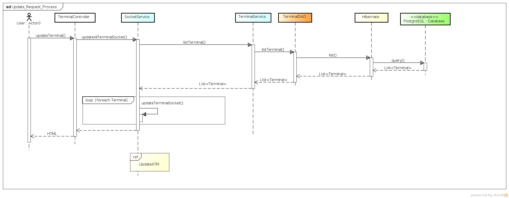
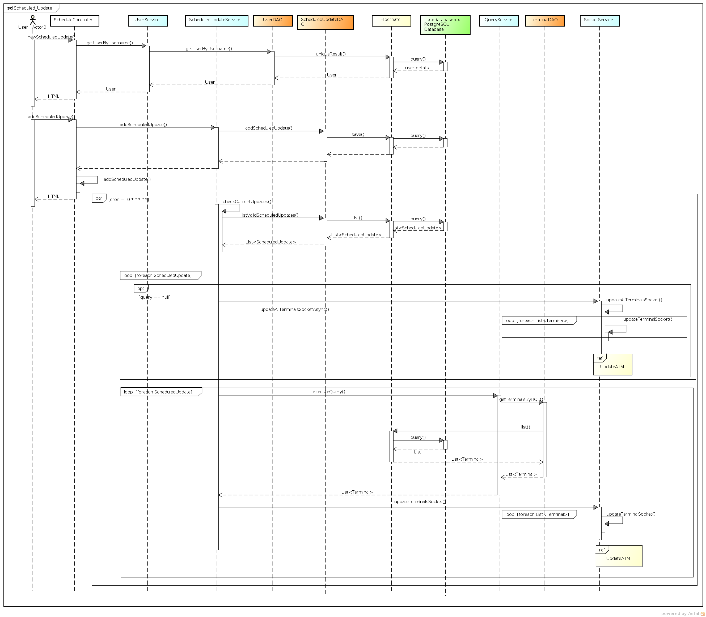
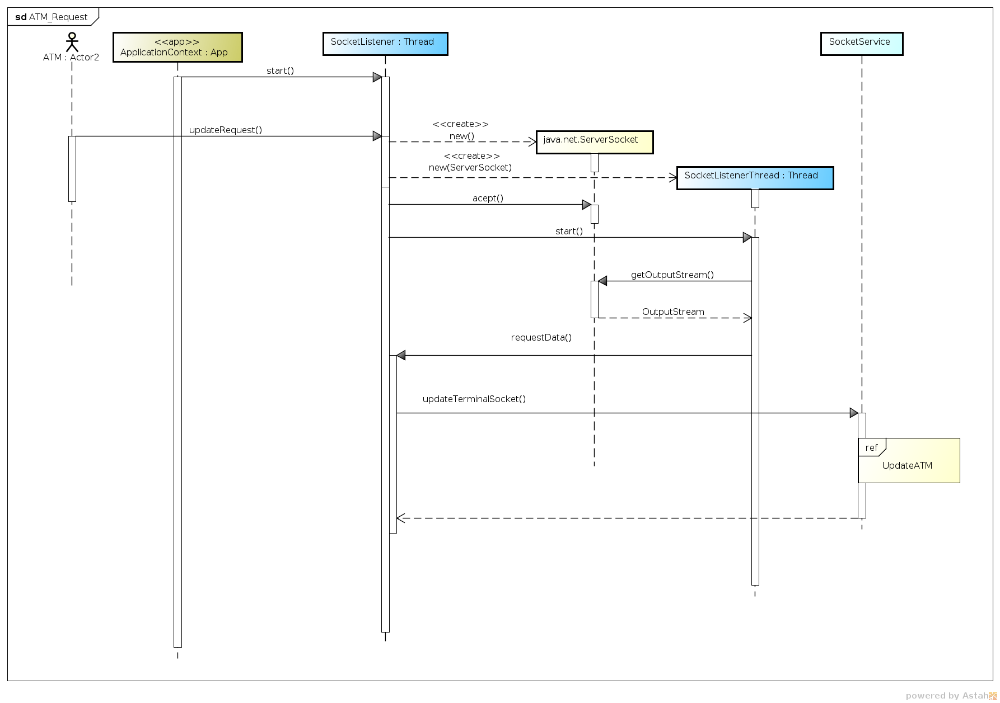
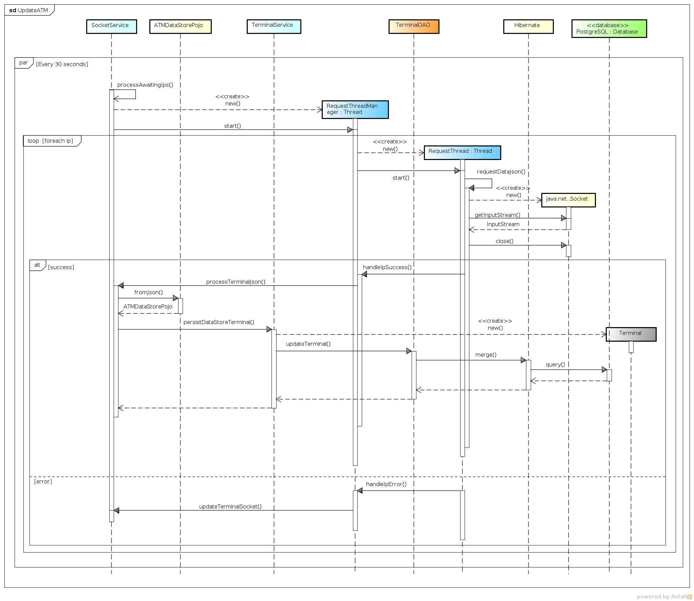
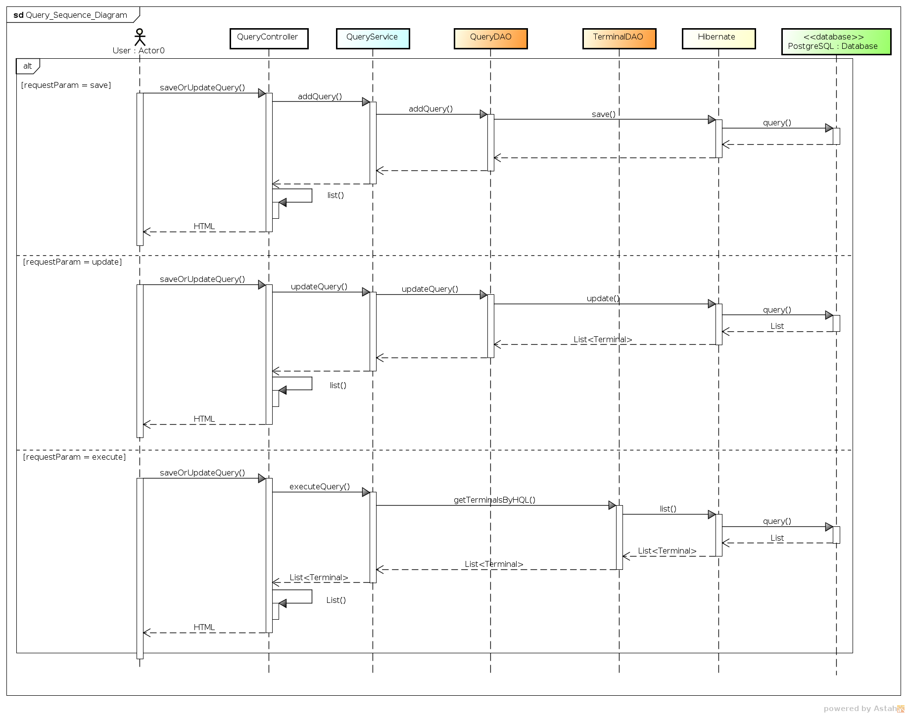

Sequence Diagrams¶
In this section are presented the sequence diagrams that allow to understand how the different calls are made between the objects
General Sequence Diagram¶

The general behavior of ATMMonitoring is as shown above: first the user selects an operation from the HTML view, that operation sends a message to the corresponding controller, and after the message is received, the controller invokes a service to operate over the entities. When the service receives the message, it will call the corresponding DAO operation. Finally, the DAO will use the Hibernate session to perform the corresponding database operation(s).
After the operation has ended in the database, Hibernate will generate the object, if the operation was a fetch, or will update the state of each entity object. Then the result of the operation will be show to the user.
Update Request¶
The update process can be requested by two actors, the user or the ATM itself. The user may as well request an update in two different ways: first, requesting it using the web page; the other way, by scheduling an update that will run at specific times defined by the user.
User Request¶
The user can request a data update by simply clicking onto the Update button in the Terminal’s data page. The sequence diagram of the process is included next:
First the user calls the controller by pressing the update button, that calls the method updateTerminal in the TerminalController who calls the SocketService to initiate the update process. The SocketService asks TerminalService for all the terminals that can be updated, when the list is received, it calls the method in charge of updating the list of terminals pending to be updated by connecting the agent.
In an independent thread the Update Process will run every minute to perform the actual update.
Scheduled Request¶
The scheduled updates are made using the web interface where we can plan an update based on a saved query that returns all the ATMs we want to be updated on a weekly or monthly basis. The following is the sequence diagram of that process:
To add a new scheduled update, first we retrieve all the queries saved by the user: the ScheduledController calls the UserService.
When the user fills all the required fields on the HTML interface and submits the form, that information is received by the ScheduledController by calling the addScheduledUpdate. That method will invoke the ScheduledService who will call the corresponding DAO in order to save the new scheduled update.
In a different thread a process will be running in order to check every minute if any scheduled update must be executed. This process starts in the ScheduledService, who first asks the ScheduledDAO for all scheduled updates that must be executed that minute. After retrieving them, it will obtain the Terminals returned by the related Query, and then, after calling the SocketServer, the Update Process will start.
ATM Request¶
The ATMs can also request data updates to the ATMMonitoring on their own. For achieving this, our server application is listening to any possible request from the ATM’s through a socket connection (same technology used in the ATMs’ agent connections). Next you can see the sequence diagram of this process:
The first step of this process is done by the application context, in other words, the Tomcat and the Spring Framework. When the application starts for the first time, it creates a new Thread (SocketListener) that will listen to a specific port waiting for any data update requested from an ATM. When a new request arrives, the SocketListener creates a new Socket and passes it to a new SocketListenerThread who will be in charge of extracting the message from the remote ATM agent. After the message is received, the control is returned to the SocketListener who will call the SocketService in order to start the Update Process
Update Process¶
This is the process which effectively updates the ATM info in the database. It’s a cron process that is run only at specific times, requesting the most recent data from the ATM’s agent. The following diagram illustrates how this process flows:
The SocketService has a method called processAwaitingIps that was marked as an Spring Scheduled process which means that the method will be run periodically at specific times, just like a cron process in Linux.
When processAwaitingIps runs, it reads all the IPs (in string) contained in a private Set attribute of the class. If that Set is not empty, the method will create a new RequestThreadManager, which will iterate over each stored IP and create a new RequestThread per each group of IPs [1] to retrieve the information from the ATMs.
The RequestThread will open a Socket to communicate with the remote ATM. If the RequestThread succesfully receives the information from the ATM, it will call the method handleSuccess in the RequestThreadManager. From there the method processTerminalJson in the SocketService will be called, which will read the JSON received from the ATM. After the JSON is read, the information obtained will be saved into the Database calling the method persistDataStoreTerminal in the class TerminalService.
If the information from the ATM can’t be received, the RequestThread will call the method handleError in the class RequestThreadManager. From there, the method updateTerminalSocket in the class SocketService will be called and all the IPs of ATMs that raised errors will be put into the set to try again in the next cycle.
| [1] | With the default configuration, up to a maximum of 50 IPs per thread and 20 threads. |
Query Management¶
Each user of ATMMonitoring can create, store and execute Queries that fetch a list of ATMs. These queries can also be used for the scheduled updates. In the following diagram we detail the query process:
In order to save a new query or update an existing one, the user must select all the desired fields to query and their conditions to be fulfilled by the ATMS through the web interface. When the user has set all the parameters, by sending the form the method saveOrUpdateQuery in the QueryController is called. An additional parameter telling us whether the operation is an update or save is included in the request. Depending on the value of that parameter, the method addQuery (for saving) or updateQuery (for updating) in the QueryService will be called and from there the operation to be executed will be either a save or a update in the database.
For executing the query, the user simply presses the corresponding button in the HTML interface, which will call the same method, saveOrUpdateQuery in the QueryController, but with the difference that the value in that additional parameter will be execute. The QueryController will then call the method executeQuery in the QueryService, and that service will call the method getTerminalsByHQL in the TerminalDAO. That method is in charge of generating and executing the HQL query with the parameters selected by the user. When the operation is performed, the list of matching ATMs is shown to the user.
Diagrams Download¶
These diagrams were made using Astah Community Edition 6.8.0/d254c5: